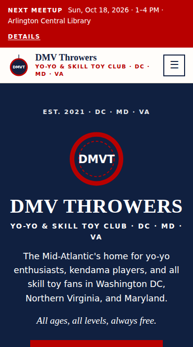
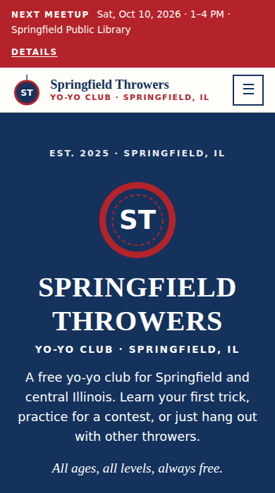
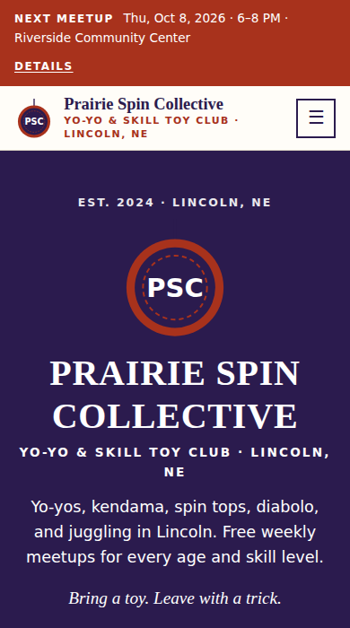
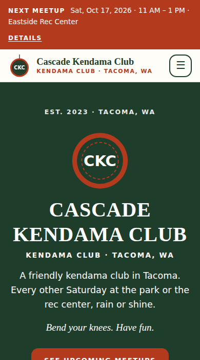
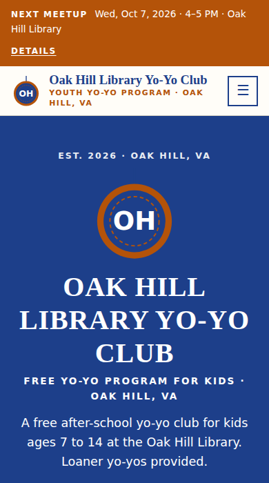

Free • Open source • No coding
A website for your yo-yo club, live in 30 minutes
Fill in one settings file with your meetup rule, venue, and contact email. The site works out your next meetup dates by itself, every day. GitHub builds and hosts it for free. Made for yo-yo clubs, kendama clubs, skill toy meetups, and school or library programs.
Use this template See examples
- $0hosting on GitHub Pages
- 15–30 minstart to live site
- 1 fileto edit: site.jsonc
See It in Action
Every example below was built by this template from one settings file. Click to explore the full site.

Real club DMV Throwers DC • MD • VA •skill-toy-club preset

Demo Yo-Yo Clubyoyo-club preset (the default)

Demo Skill Toy Clubskill-toy-club preset, weekly meetups

Demo Kendama Clubkendama-club preset, rounded corners

Demo Library Programyouth-program preset, school-year season
DMV Throwers' settings are in examples/dmv-throwers.jsonc. Copy them as a head start for your own club. The club's own hand-built site, with its contest pages and photos, is at dmvthrowers.club.
Deploy in 4 Steps
You need a free GitHub account. Everything happens in your web browser.
-
Copy the template
Click Use this template → Create a new repository. Name it (e.g.
springfield-throwers), keep it Public, and click Create repository.1 minute
-
Turn on GitHub Pages
In your new repository: Settings → Pages → Source → GitHub Actions. That's the only setting.
1 minute
-
Fill in your details
Open
site.jsonc, click the pencil icon, and work top to bottom. Pick your preset, then add your name, meetup rule, venue, email, team, and events. Every line has a note. Click Commit changes.10–25 minutes
-
You're live
Open the Actions tab and wait for the green check (about a minute). Your site is at
https://YOUR-NAME.github.io/YOUR-REPO/. Share it!1 minute
What you edit
One file, site.jsonc. The preset fills in the rest.
{
"preset": "yoyo-club",
"club": {
"name": "Springfield Throwers",
"slogan": "All ages, all levels, always free.",
"city": "Springfield", "region": "IL"
},
"meetup": {
"schedule": { "repeat": "monthly", "week": 3,
"weekday": "Sunday", "start": "13:00", "end": "16:00" },
"venue": "Springfield Public Library",
"loaners": true
},
"contact": { "email": "hello@example.org" }
}Or let an AI agent do it
Paste this into Claude Code or another coding agent after step 2:
Set up my club's website from this repository.
Read AGENTS.md first. Ask me for our preset, club
name, area, meetup rule (like "3rd Sunday, 1-4 PM"),
venue and address, contact email, team members
(with their OK), and upcoming events. Edit
site.jsonc only, run the build and the check,
fix every warning, then push to main and confirm
the GitHub Pages site is live.The agent instructions in AGENTS.md keep it to your facts and your members' privacy.
Pick Your Preset
| Preset | For | Learn page |
|---|---|---|
yoyo-club | A yo-yo club (default) | Yo-yo basics, a 3-level trick path, and 1A–5A contest styles |
skill-toy-club | Yo-yos plus kendama, spin tops, diabolo, juggling | First tricks for each toy |
kendama-club | A kendama club | Kendama basics and a trick ladder |
youth-program | A school, library, camp, or rec-center program for kids | A printable trick checklist and tips for teachers |
What's Included
- 11 pages: Home, About, Meetups, Learn, Team, Gallery, Resources, FAQ, Contact, Code of Conduct, Privacy & Safety
- Meetups that schedule themselves: "every 3rd Sunday" or "every other Thursday" becomes real dates, rebuilt daily
- Next-meetup bar on every page, plus skip dates for holidays and closures
- Learn page: first steps, a trick path, contest styles, and trusted tutorial links
- Code of conduct written for skill toy meetups, with equipment safety
- Shops & sponsors with discount code boxes, plus a donate button
- Found on Google: every meetup is listed as an event search engines understand
- Works on every phone: big tap targets, readable text, no sideways scrolling
- Private and locked down: no cookies, trackers, or outside fonts, plus a strict security policy and an automatic check
What It Costs
| Item | Cost |
|---|---|
| Template | Free forever (public domain, Unlicense) |
| Hosting on GitHub Pages | Free for public repositories |
Address like yourname.github.io/yoyo-club | Free |
Your own domain, like springfieldthrowers.org (optional) | About $10–20 per year |
Questions
Do I need to know how to code?
No. You edit a text file in your browser. If you can fill in a form, you can do this. The README walks through every step, and an AI coding agent can do it for you.
How do the meetup dates work?
You describe the rule once, like "3rd Sunday, 1–4 PM" or "every other Thursday". The site rebuilds every morning, so the next meetup bar and the dates list always look ahead. Add skip dates for holidays.
We play more than yo-yos. Does it fit?
Yes. The skill-toy-club preset covers yo-yo, kendama, spin tops, diabolo, juggling, and flow arts. You can also edit the list of what you play in site.jsonc.
Is it really free?
Yes. The template is public domain, and GitHub Pages hosts public sites for free. The only optional cost is your own domain name.
What about photos of kids?
Post photos only with permission, and never with kids' names. The README explains how to resize photos and remove location data, and the site's Privacy & Safety page tells families how to ask for a photo to be removed.
Can we use our own logo and domain?
Yes. Add your logo as assets/emblem.svg. Without one, the site makes a yo-yo logo with your initials. For a domain, enter it in Settings → Pages → Custom domain; the README has the DNS records.
Something went wrong. Now what?
A red X on the Actions tab means the automatic check caught a problem, usually a typo in site.jsonc. Click the run for a plain-English message. Your live site stays as it was until it's fixed.